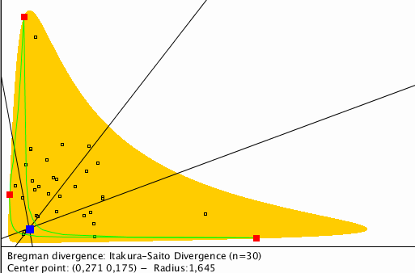

This page provides goodies for the paper
pdf
On the smallest enclosing information disk. Information Processing Letters 105(3): 93-97 (2008)
Disclaimer: Source codes below are provided to the academic community
for reproducible research with no guarantee or whatsoever (run at your own risk in sandboxes)

Interactive recording of a session:
Online Demo in Javascript (warning: time consuming for rastering the Bregman ball, please be patient!):
Tip! Select divergence for the popping-up menu my keeping left mouse click button down and scrolling.
Here is the
modified processing file MiniBBall4Javascript.pde to make it work with processing.js
Euclidean distance
(equivalent to squared Euclidean Bregman divergence for the minimax optimization problem)
Mahalanobis distance
(equivalent to squared Mahalanobis Bregman divergence for the minimax optimization problem)
Processing v3
source code MiniBBallPDE.pde (need to be run in Java mode)
A processing source code with Itakura-Saito divergence hard-coded as the Bregman divergence:
MiniBBallItakuraSaitoPDE.pde
The processing sketch uses Point/PointSet classes and derived classes from a generic class BregmanDivergence (by overriding methods).
Therefore it cannot be run now with processing.js in Javascript mode.
We fixed this problem above by adding dummy args in functions.
Modified processing file MiniBBall4Javascript.pde
pdf
On the smallest enclosing information disk. Inf. Process. Lett. 105(3): 93-97 (2008)
pdf
On approximating the smallest enclosing Bregman Balls. ACM Symposium on Computational Geometry 2006: 485-486
video (6 min.)
pdf
Fitting the Smallest Enclosing Bregman Ball. ECML 2005: 649-656
Original Java applet program by Frank Nielsen (2006), with processing code v3 adapted by Antoine Chatalic (2015).
(C) 2015 Frank Nielsen, All rights reserved.